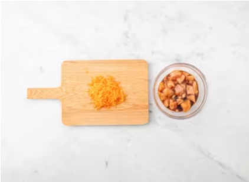
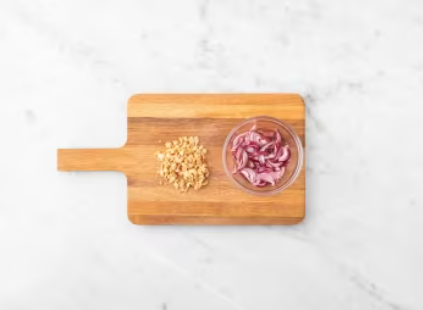
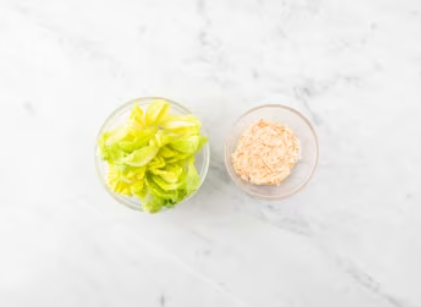
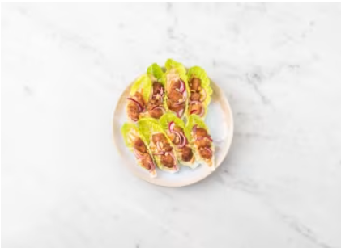

Pela y ralla el ajo (ver cantidad en ingredientes). Ralla la mitad del jengibre (doble para 4p). En un bol, agrega el ajo, el jengibre, la salsa de soja, un chorrito de aceite y un chorrito de vinagre de vino tinto. Añade los 250g de pollo y remueve. Pela y ralla la zanahoria.
RECUERDA: Lávate las manos y los utensilios de cocina después de manipular carne cruda.
Pela la cebolla, divídela en dos y corta una mitad (doble para 4p) en tiras finas. Luego, ponla en un bol con el vinagre para encurtir y la sal para encurtir (ver cantidad en ingredientes de ambos). Remueve y deja que marine hasta el emplatado. Con la base de un cazo, aplasta los cacahuetes en su propia bolsa para picarlos.
En un bol, mezcla la mayonesa, la mostaza y la miel. Añade la zanahoria, salpimienta y mezcla. Corta la base de los cogollos de lechuga y separa las hojas. Corta el corazón de la lechuga en tiras, añádelas al bol con la zanahoria y mezcla. En una sartén, calienta un chorrito de aceite a fuego medio. Agrega el pollo marinado y cocina 5-6 min, hasta que esté dorado y bien cocinado en el interior.
Sobre cada cogollo de lechuga, agrega un poco de zanahoria rallada en salsa y cubre con el pollo marinado. Agrega encima la cebolla encurtida al gusto, previamente escurrida, y espolvorea con los cacahuetes picados.
